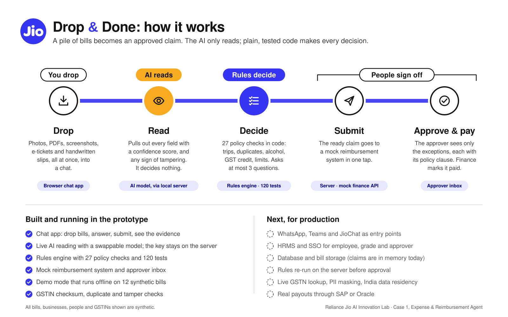

An AI-native reimbursement assistant in the chat apps employees already use. It reads every bill, groups the spend, checks policy, catches duplicates and fake receipts, and asks only the questions it can't answer itself.
Employees collect bills, type in details, pick categories, check what's allowed and build a claim. Finance then re-checks all of it by hand.
India makes it harder: handwritten auto/taxi slips, faded thermal prints, UPI screenshots in place of invoices, bills in regional languages, and lost GST input credit when hotels don't bill to the company GSTIN.
Feels: "chore, unfair delays"
Feels: "I can't really check this"
Feels: "drowning in rework"
Consolidation: Capital One bought Brex ($5.15B), Ramp passed $1B ARR, Sage bought Fyle. SAP Concur holds about 19% share.
| Gap | Concur / Zoho / Happay | Drop & Done |
|---|---|---|
| Interface | App + form, one receipt at a time | Chat, whole pile at once |
| Policy check | After submission | Before submission, explained |
| Missing info | Mandatory fields | ≤3 targeted questions |
| Indian bills | Tuned for clean receipts | Handwritten, UPI, Hindi |
| Fake receipts | Emerging add-on | Built in, every claim |
| GST credit | Capture only | Prevent leakage at source |
Time-to-ready-to-submit
Target under 2 min for a 10-receipt trip, against about 20 min today.
Human in the loop by design: AI prepares and flags, people approve payouts. Every AI decision is logged with the image region and policy clause it relied on.

"amount": { "value": 4200,
"confidence": 0.97,
"source": "bottom-right total" },
"gstin": { "value": null,
"confidence": 0.0,
"status": "MISSING" },
"category":{ "value": "Meals",
"confidence": 0.88 }
Confidence ≥ 0.85 is auto-filled. Below that, or missing, it becomes a question. Anything contradictory is flagged.
COMPLETE NEEDS_INFO QUESTIONABLE EXCLUDED
DRAFT → READY → SUBMITTED → APPROVED → PAID
A claim is READY only when every line is COMPLETE or EXCLUDED.
🏨 Hotel: invoice, stay dates, GSTIN, city tier
🍽 Meal > cap: attendees + purpose
🚕 Cab: from/to or trip link
✈️ Flight: boarding pass or e-ticket
Illustrative model: 10,000 claim-filing employees × 2 claims/month = 240,000 claims/year. Assumptions are listed so they can be replaced with real figures.
| Lever | Today | With Drop & Done | Annual value |
|---|---|---|---|
| Employee prep time | 20 min | 3 min | 68,000 hrs |
| Rework rate | 19% | <5% | 10,000 hrs |
| Finance check / claim | 10 min, all claims | 3 min, risk-based | 28,000 hrs |
| Reimbursement cycle | 10–15 days | 2–3 days | Employee experience |
| GST input credit | Partly captured | Leakage prevented | ₹ direct recovery |
| Duplicates / fakes | Sampled | 100% screened | Loss avoided |
Plus hard savings: GST credit recovered on hotel and travel invoices, and duplicate or fake claims stopped before payout. At ~1% of claims flagged as suspect, even a fraction prevented covers the run cost.
Benchmarks: GBTA (time, error rate) · AppZen / SAP Concur (fake receipt prevalence)
Now
+8 weeks
+6 months
| Risk | Mitigation |
|---|---|
| Extraction errors on poor images | Confidence thresholds; ask instead of guess; deterministic arithmetic checks |
| Data privacy (PII, bank data) | PII masking before LLM, India data residency, encryption, RBAC, audit log |
| Over-trusting AI decisions | AI never approves payouts; every flag cites evidence; humans override, and overrides feed the eval set |
12 messy bills to a ready claim, timed live
One business unit, 8 weeks, measured against KPIs
Finance policy owner + IT security partner